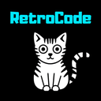
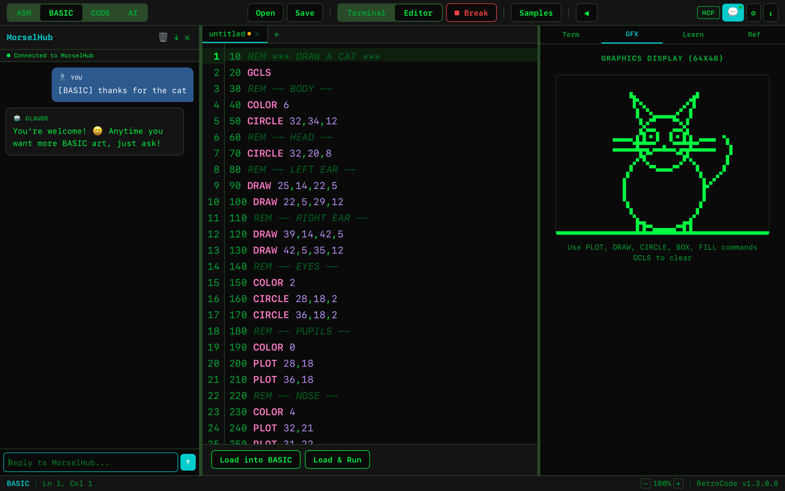
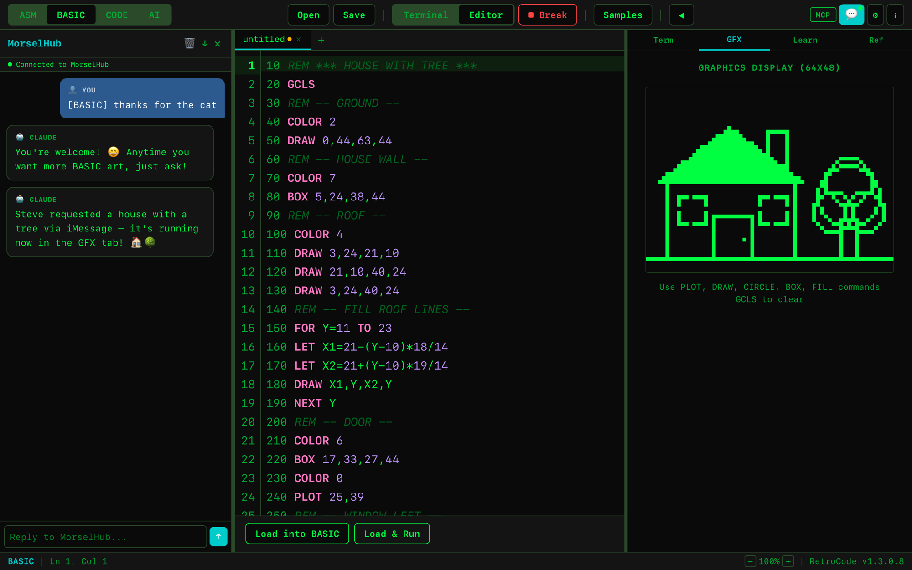
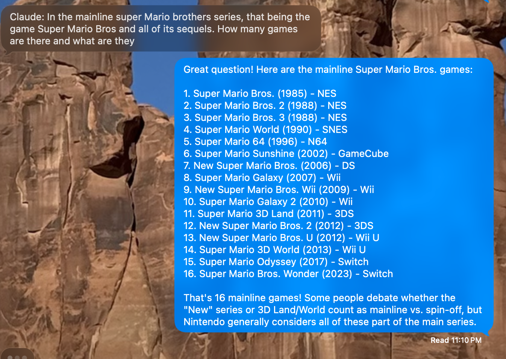
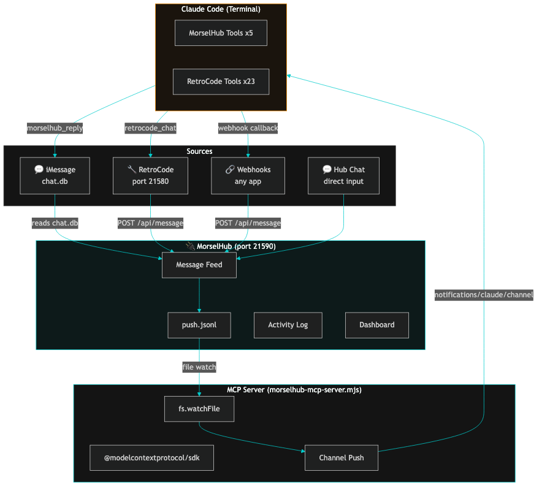
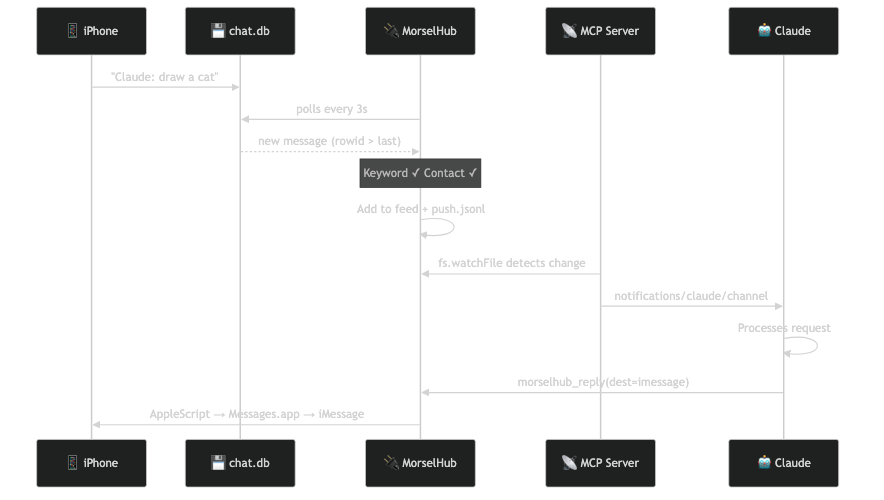
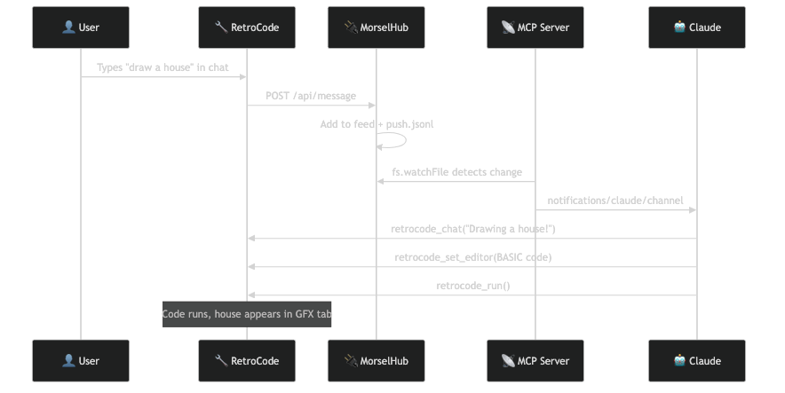
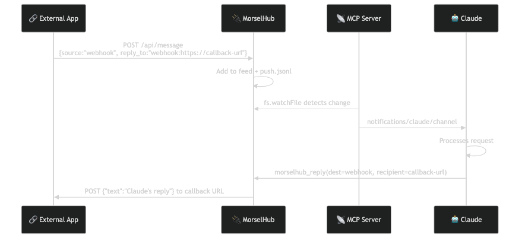

MorselHub
Your AI Message Hub
Connect iMessage, RetroCode, and webhooks to Claude AI. Messages push instantly via Channels. Replies route back to the source. Every morsel counts.
Download for macOS
v1.0.0 · macOS 12+ (Apple Silicon) · Free · Signed & Notarized

Works with RetroCode
Write 8-bit assembly. Program in BASIC. Code in 25 languages. Enable the MorselHub connector in RetroCode and your coding sessions flow through MorselHub to Claude — alongside iMessage and webhooks.
See It In Action
Send an iMessage from your phone. Claude writes BASIC code in RetroCode and renders 8-bit graphics — all automatically.

"Draw a cat" → Claude writes BASIC → 8-bit cat appears

"Draw a house with a tree" → sent via iMessage from phone
Phone → iMessage → MorselHub → Claude → RetroCode editor + GFX display. Every morsel counts.

Ask Claude anything via iMessage — "How many Super Mario Bros games are there?" → instant detailed reply
Why MorselHub?
Senzall loves working with Agentic AI so much he wanted a way to talk to it anytime — using retro tools and modern gadgets alike. Ever since that first TRS-80 in the 1980s and learning Assembly, Pascal, and many other languages over the years, Senzall has been sharing his love of all things tech with friends, family, and strangers.
MorselHub is a growing set of connectors you can use with Claude — and soon other AI platforms — to have safe and exciting interactions. Every morsel of a message, every small bit of an idea, gets delivered to your AI assistant instantly. Every morsel counts.
How It Works

Messages arrive from any source. MorselHub displays them in a live feed, pushes actionable ones to Claude via the MCP Channel protocol, and routes Claude's replies back to the original sender — including iMessage replies via AppleScript.
Features
💬 iMessage Bridge
Listen for messages with a keyword trigger from approved contacts. Replies go back as iMessages automatically.
🔧 RetroCode Connector
Bridge to RetroCode's chat panel. Code in Assembly or BASIC while chatting with Claude.
🔗 Webhook Receiver
POST to /api/message from any app — CI pipelines, monitoring alerts, custom integrations.
⚡ Instant Push
Messages push to Claude instantly via MCP Channels using the official @modelcontextprotocol/sdk.
🛡️ Security First
Strict contact allowlist. Blocked senders never reach Claude. Master contact alerts. Prompt injection protection.
📊 Dashboard
Stats grid, contact leaderboard, activity log (last 100 entries persisted to JSON).
🎨 6 Themes
Default, Dark, Standard, Light, RPG, and High Contrast — same themes as RetroCode.
🔔 Master Alerts
Designate a master contact who receives iMessage alerts when blocked senders try or non-master contacts message Claude.
Architecture
MorselHub is a push-based message hub. Messages flow in from multiple sources, get displayed in the feed, and actionable ones push directly to Claude via MCP Channels. Claude responds using MCP tools — replies route back to the original sender.
System Overview
Connection Details
💬 iMessage Connection

Requires Full Disk Access permission. Only approved contacts with the keyword trigger Claude. Blocked senders are logged but never forwarded.
🔧 RetroCode Connection

Claude has both MorselHub tools AND RetroCode's 23 MCP tools. It can write code, run programs, manage files, and control the terminal — all from a chat message.
🔗 Webhook Connection

Works with any system that has an incoming webhook URL — Teams, Slack, Discord, or custom apps. Include a callback URL in reply_to to receive Claude's response.
Example: Send a webhook with curl
curl -X POST http://localhost:21590/api/message \
-H "Content-Type: application/json" \
-d '{"source":"webhook","sender":"My App",\
"text":"What is the weather?",\
"reply_to":"webhook:https://my-app.com/callback"}'
Tech Stack
Tauri v2
Desktop app framework. Rust backend for performance and security. Vue 3 frontend. Small binary, native menus, system tray.
Rust
HTTP API server (tiny_http), iMessage SQLite reader (rusqlite), PTY terminal, AppleScript iMessage sender. All on port 21590.
Vue 3 + TypeScript
Reactive UI with message feed, source filters, dashboard stats, contact management, setup wizard, 6 themes.
MCP SDK
Official @modelcontextprotocol/sdk for Claude Code Channels. StdioServerTransport for subprocess communication.
Push via File Watch
Messages write to ~/.morselhub/push.jsonl. MCP server watches with fs.watchFile() and pushes to Claude instantly. No HTTP polling.
Security
Contact allowlist with exact match. Keyword filtering. Blocked sender logging. Master contact iMessage alerts. Localhost-only API.
MCP Tools
MorselHub exposes 5 tools to Claude via the MCP protocol. When used with RetroCode, Claude also gets 23 additional tools for code editing, file management, and terminal control.
morselhub_replyReply to a message. Routes to iMessage (AppleScript), webhook (HTTP POST), or feed.
morselhub_get_feedRead all messages in the feed from all sources.
morselhub_send_imessageProactively send an iMessage to any contact.
morselhub_get_settingsRead MorselHub configuration — contacts, keywords, ports.
morselhub_healthCheck if MorselHub is running and the API is available.
RetroCode Tools (when connected)
retrocode_chatSend a message to RetroCode's chat panel
retrocode_set_editorWrite code to the editor (25 languages)
retrocode_get_editorRead current editor content + workspace
retrocode_runRun the program (ASM/BASIC/terminal)
retrocode_terminalSend commands to the embedded terminal
retrocode_save_fileSave files to disk
+ 17 moreTabs, modes, references, file browser, etc.
HTTP API
MorselHub runs a local HTTP API on port 21590. All endpoints are localhost-only.
GET/api/healthHealth check — returns app name and version
GET/api/feedGet all messages in the feed
POST/api/messagePost a message from any source (webhook entry point)
POST/api/send-imessageSend an iMessage via AppleScript
GET/api/settingsRead current settings
POST/api/heartbeatConnection keepalive
Quick Start
- Download and open MorselHub
- Grant Full Disk Access for iMessage reading
- Configure your iMessage address and approved contacts
- Click Install MCP Server in the Setup tab
- In Terminal: claude mcp add morselhub node ~/morselhub-mcp-server.mjs
- Start Claude: claude --allowedTools "mcp__morselhub__*" --dangerously-load-development-channels server:morselhub
- Send yourself an iMessage starting with "Claude:" — it arrives in MorselHub, pushes to Claude, and Claude replies via iMessage
Permissions & Security
Full Disk Access (macOS)
MorselHub reads your iMessage database (~/Library/Messages/chat.db) to detect incoming messages. macOS requires Full Disk Access for this.
- Open System Settings > Privacy & Security > Full Disk Access
- Click + and add MorselHub.app (from your Applications folder)
- Toggle it on
- Restart MorselHub
During development, add Terminal.app instead (the dev binary inherits its permissions).
Contact Allowlist
Only messages from people you explicitly approve will ever reach Claude. Unknown senders are blocked and logged. You can designate a master contact to receive iMessage alerts about security events.
⚠️ Important Warnings
Be very careful who you add to your contact list. Anyone on the list can send messages that Claude will act on — including running commands, editing files, and accessing your computer via Claude Code's tools.
Token usage: Every message forwarded to Claude consumes tokens from your Claude subscription. Frequent or large messages will increase your token usage.
Computer access: Claude Code has access to your local files, terminal, and development tools. Messages from approved contacts can trigger Claude to take actions on your machine.
Use at your own risk. MorselHub is provided as-is, without warranty. The developers are not responsible for any actions taken by Claude in response to forwarded messages, any unauthorized access, data loss, or token charges. You are solely responsible for managing your contact list and monitoring Claude's activity.
Senzall's Clowder of Applications
A clowder is a group of cats. These are ours.
MorselHub
Your AI Message Hub
Connect iMessage, RetroCode, and webhooks to Claude. Messages push instantly via Channels. Replies route back to the source.
Write 8-bit assembly. Program in BASIC. Code in 25 languages. Chat with Claude or GitHub Copilot. Inspired by the TRS-80 and Apple II.